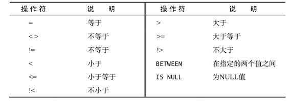
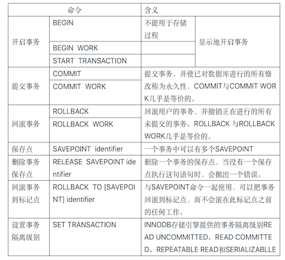

SQL必知必会
1 了解SQL¶
数据库基础¶
数据库(database)是保存有组织的数据的容器(通常是一个文件或一组文件)。数据库软件，确切的说是数据库管理系统(DBMS)。数据库是通过DBMS创建和操纵的容器。
表(table)是某种特定类型数据的结构化清单。数据库中的每个表都有一个唯一一个名字来标识，称为表名。
模式(schema)是指关于数据库和表的布局及特性的信息，可以用来描述数据库中的特定的表，也可以用来描述整个数据库(和其中表的关系)。
表由列(column)组成，列存储表中某部分的信息。每个表列都有相应的数据类型，它限制(或允许)该列中存储的数据。
行(row)是表中的一个记录(record)。行和记录多半是可以交替使用的，但从技术上说，行才是正确的术语。
主键(primary key)是一列或一组列，其值能够唯一标识表中每一行。虽然并不总是需要主键，但多数数据库设计者都会保证他们创建的每个表具有一个主键，以便于以后的数据操作和管理。
表中的任何列都可以作为主键，只要它满足一下条件：
- 任意两行都不具有相同的主键值
- 每一行都必须具有一个主键值(主键列不允许NULL值)
- 主键列中的值不允许修改或更新
- 主键值不能重用(如果某行从表中删除，它的主键不能付给以后的新行)
什么是SQL¶
SQL(发音为S-Q-L或sequel)是Structured Query Language(结构化查询语言)的缩写。SQL是一种专门用来与数据库沟通的语言。
标准SQL由ANSI标准委员会管理，称为ANSI SQL。DBMS一般通过增加语句或指令，对SQL进行了扩展。
2 检索数据¶
SELECT语句¶
SELECT prod_name FROM Products;
上述语句利用SELECT语句从Products表中检索一个名为prod_name的列。所需的列名写在SELECT关键字之后，FROM关键字指出从哪个表中检索数据。
要想从一个表中检索多个列，仍然使用相同的SELECT语句。唯一的不同是必须在SELECT关键字后给出多个列名，列名之间必须以逗号分隔。
SELECT prod_id, prod_name, prod_price FROM Products;
使用星号(*)通配符检索所有的列
SELECT * FROM Products;
使用DISTINCT关键字，指示数据库值返回不同的值
SELECT DISTINCT vend_id FROM Products;
如果只想返回第一行或者一定数量的行，使用LIMIT字句
SELECT prod_name FROM Products LIMIT 5;
LIMIT 5指示MySQL返回不超过5行的数据。
如果需要指定从哪儿开始以及检索的行数，可以使用OFFSET和LIMIT关键字， LIMIT指定返回的行数，OFFSET指定从哪儿开始。
SELECT prod_name FROM Products LIMIT 5 OFFSET 4;
LIMIT 5 OFFSET 5指示MySQL返回从第4行起的5行数据。
MySQL和MariaDB支持简化版的LIMIT 4 OFFSET 3语句，即LIMIT 3,4。使用这个语法，逗号之前的值对应OFFSET，逗号之后的值对应LIMIT。
很多DMBMS都支持各种形式的注释语法。使用两个连字符(--)作为行内注释
SELECT prod_name FROM Products; -- 这是一条行内注释
也可以在一行的开始处使用#，这一整行都将作为注释
# 这是一行注释
SELECT prod_name FROM Products;
可以使用/* */进行多行注释，注释可以在脚本的任何位置停止和开始
/* SELECT prod_name,
vend_id FROM Products; */
SELECT prod_name FROM Products;
3 排序检索数据¶
检索出的数据如果不排序，一般将以它在底层表中出现的顺序显示。
子句
SQL语句由子句构成，有些子句是必须的，有些则是可选的。一个子句通常由一个关键字加上所提供的数据组成。例如SELECT语句的FROM子句。
为了明确地排序用SELECT语句检索出的数据，可使用ORDER BY子句。ORDER BY子句取一个或多个列的名字，据此对输出进行排序。
SELECT prod_name FROM Products ORDER BY prod_name;
ORDER BY子句的位置
在指定一条ORDER BY子句时，应该保证它时SELECT语句中最后一条子句。如果它不是最后的子句，将会出现错误消息。
要按多个列排序，简单指定列名，列名之间用逗号分开即可。
SELECT prod_id, prod_price, prod_name FROM Product
ORDER BY prod_price, prod_name;
除了能用列名指出排序顺序外，ORDER BY还支持按相对列位置进行排序。
SELECT prod_id, prod_price, prod_name FROM Products
ORDER BY 2, 3;
这条SQL语句的与上一条等价，唯一区别是选择列的相对位置而不是列名。
升序排列排序(从A到Z)是默认的排序顺序。为了进行降序排序，必须制定DESC关键字。
下面的例子以价格降序来排序产品（最贵的排在最前面）：
SELECT prod_id, prod_price, prod_name FROM Products
ORDER BY prod_price DESC, prod_name;
在多个列上降序排序
如果想在多个列上进行降序排序，必须对每一列指定DESC关键字。
区分大小写和排序顺序
对文本数据进行排序时， A与a相同吗？a位于B之间，还是位于Z之后？这些问题取决于数据库的设置方式。
4 过滤数据¶
数据库表一般包含大量的数据，很少需要检索表中的所有行。通常值会根据特定操作或报告的需要提取表数据的子集。只检索所需数据需要指定搜索条件(search criteria)，也称为过滤条件(filter condition)。
在SELECT语句中，数据根据WHERE子句中指定的搜索条件进行过滤，WHERE子句在FROM子句后给出。
SELECT prod_name, prod_price FROM Products WHERE prod_price = 3.49;
WHERE子句支持多种操作符

例如列出所有不是供应商DLL01制造的产品
SELECT vend_id, prod_name FROM Products WHERE vend_id != 'DLL01';
要检查某个范围的值，可以使用BETWEEN操作符，指定范围的开始值和结束值，用AND关键字分隔。BETWEEN匹配范围中所有的值，包括指定的开始值和结束值。
例如检索价格在5美元和10美元之间的所有产品：
SELECT prod_name, prod_price FROM Products WHERE prod_price BETWEEN 5 AND 10;
NULL值
在一个列不包含值时，称其包含控制NULL。NULL是无值(no value)，它与字段包含0、空字符串或仅仅包含空格不同。
确定值是否为NULL，不能简单地检查是否= NULL。需要使用IS NULL子句。
SELECT prod_name FROM Products where prod_price IS NULL;
5 高级数据过滤¶
要通过不止一个列进行过滤，可以使用AND操作符给WHERE子句附加条件。
例如检索由供应商DLL01制造且价格小于等于4美元的所有产品的名称和价格：
SELECT prod_id, prod_price, prod_name FROM Products
WHERE vend_id = 'DLL01' AND prod_price <= 4;
OR操作符指示检索匹配任一条件的行。
SELECT prod_id, prod_price, prod_name FROM Products
WHERE vend_id = 'DLL01' OR prod_price <= 4;
SQL在处理WHERE子句时，优先处理AND子句，其次是OR子句。所以当需要列出价格10美元及以上，且由DLL01或BRS01制造的所有产品时，需要使用圆括号()对操作符进行明确分组。
SELECT prod_name, prod_price FROM Products
WHERE (vend_id = 'DLL01' OR vend_id = 'BRS01') AND prod_price >= 10;
在WHERE子句中使用圆括号
任何时候使用具有AND和OR操作符的WHERE子句，都应该使用圆括号明确地分组操作符。使用圆括号没有什么坏处，它能消除歧义。
IN操作符用来指定条件范围，范围中的每个条件都可以进行匹配。IN取一组由逗号分隔、括在圆括号中的合法值。
例如可以将上述SQL语句转化为
SELECT prod_name, prod_price FROM Products
WHERE vend_id IN ('DLL01', 'BRS01')
ORDER BY prod_name;
为什么使用IN操作符？其优点如下：
- 在由很多合法选项时，IN操作符的语法更清楚，更直观。
- 在与其他AND和OR操作符组合使用IN时，求值顺序更容易管理。
- IN操作符一般比一组OR操作符执行得更快。
- IN的最大优点是可以包含其他SELECT语句，能够更动态地建立WHERE子句。
NOT关键字用在WHERE子句中用来否定其后条件的关键字。
SELECT prod_name FROM Products WHERE NOT vend_id = 'DLL01'
ORDER BY prod_name;
6 用通配符进行过滤¶
在搜索字句中使用通配符，必须使用LIKE操作符。
| 通配符 | 含义 |
|---|---|
% |
任何字符出现任意次数 |
_ |
与%一样，但只匹配单个字符 |
[] |
指定一个字符集，必须匹配指定位置的一个字符 |
9 汇总数据¶
SQL提供了专门的聚集函数(aggregation function)，可以方便汇总数据而不用把它们实际检索出来。
| 函数 | 说明 |
|---|---|
AVG() |
返回某列的平均值 |
COUNT() |
返回某列的行数 |
MAX() |
返回某列的最大值 |
MIN() |
返回某列的最小值 |
SUM() |
返回某列值之和 |
NULL值
AVG()函数忽略列值为NULL的行。
COUNT(*) v.s COUNT(column)
使用COUNT(*)对表中行的数目进行计数，不管表列中包含的是空值(NULL)还是非空值。使用COUNT(column)对特定列中具有值的行进行计数，忽略NULL值。
SELECT语句可根据需要包含多个聚集函数:
SELECT COUNT(*) AS num_items,
MIN(prod_price) AS price_min,
MAX(prod_price) AS price_max,
AVG(prod_price) AS price_avg
FROM Products;
10 分组数据¶
分组是使用SELECT语句的GROUP BY子句建立的。
SELECT vend_id, COUNT(*) AS num_prods FROM Products GROUP BY vend_id;
GROUP BY和ORDER BY经常完成相同的工作，但它们非常不同：
| ORDER BY | GROUP BY |
|---|---|
| 对产生的输出排序 | 对行分组，但输出可能不是分组的顺序 |
| 任意列都可以使用(甚至非选择的列也可以使用) | 只可能使用选择列或表达式列，而必须使用每个选择列表达式 |
| 不一定需要 | 如果与聚集函数一起使用列(或表达式)，则必须使用 |
不要忘记ORDER BY
一般在使用GROUP BY子句时，应该也给出ORDER BY子句。这是保证数据正确排序的唯一方法。千万不要依赖GROUP BY排序数据。
SQL允许过滤分组(即包括哪些分组，排除哪些分组)。WHERE子句过滤指定的行，而HAVING子句过滤指定的分组，并且HAVING支持所有WHERE操作符。
下面的SQL语句列出具有两个以上产品且其价格大于等于4的供应商：
SELECT vend_id, COUNT(*) AS num_prods
FROM Products
WHERE prod_price >= 4
GROUP BY vend_id
HAVING COUNT(*) >= 2;
12 联结表¶
内联结(inner join)基于两个表之间的相等测试。下面就是一个内联结的例子
SELECT vend_name, prod_name, prod_price
FROM Vendors, Products
WHERE Vendors.vend_id = Products.vend_id;
可以对上面例子使用稍微不同的语法，明确联结的类型:
SELECT vend_name, prod_name, prod_price
FROM Vendors INNER JOIN Products
ON Vendors.vend_id = Products.vend_id;
15 插入数据¶
INSERT用来将行插入或添加到数据库表。插入有几种方式：插入完整的行，插入行的一部分，插入某些查询的结果。
把数据插入表中最简单方法是使用基本的INSERT语法，它要求指定表名和插入到新行中的值。例如
INSERT INTO Customers VALUES('1000006', 'Toy Land',
'124 ANy Street', 'New York', 'NY', '11111',
'USA', NULL, NULL);
虽然这种语法很简单，但并不安全，应该尽量避免使用，更安全的方法如下
INSERT INTO Customers（cust_id, cust_name, cust_address,
cust_city, cust_state, cust_zip, cust_country, cust_contant, cust_mail)
VALUES('1000006', 'Toy Land', '124 ANy Street', 'New York', 'NY',
'11111', 'USA', NULL, NULL);
总是使用列的列表
不要使用没有明确给出列的INSERT语句。给出列能使SQL代码继续发挥作用，即使表结构发生了变化。
16 更新和删除数据¶
更新(修改)表中的数据，可以使用UPDATE语句。
UPDATE Customers
SET cust_email = 'kim@jsadfl.com', cust_contact = 'Sam Roberts'
WHERE cust_id = '1000005';
从一个表中删除数据，使用DELETE语句。
DELETE FROM Customers
WHERE cust_id = '1000006';
17 创建和操纵表¶
利用CREATE TABLE创建表，必须给出下列信息：
- 新表的名字，在关键字CREATE TABLE之后给出
- 表列的名字和定义，用逗号分隔；
- 有的DBMS还要求指定表的位置；
表名紧跟CREATE TABLE关键字。实际的表定义(所有列)括在圆括号之中，各列之间用逗号分隔。
例如创建Products表:
CREATE TABLE Products
（
prod_id int primary key auto_increment NOT NULL,
vend_id CHAR(10) NOT NULL,
prod_name CHAR(254) NOT NULL,
prod_price DECIMAL(8,2) NOT NULL,
prod_desc VARCHAR(1000) NULL
);
SQL允许指定默认值，在插入行时如果不给出值，DBMS将自动采用默认值。默认值在CREATE TABLE语句的列定义中用关键字DEFAULT指定。
CREATE TABLE OrderItems
(
order_num INTEGER NOT NULL,
order_item INTEGER NOT NULL,
quantity INTEGER NOT NULL DEFAULT 1,
item_price DECIMAL(8,2) NOT NULL
);
默认值经常用于日期或时间戳列，例如DEFAULT CURRENT_DATE()将系统日期作为默认日期。
对已有表进行增加列，例如
ALTER TABLE Vendors ADD vend_phone CHAR(20);
可以使用describe table查看表的结构和信息。
使用DROP TABLE语句删除表：
DROP TABLE Cust;
18 使用视图¶
视图是虚拟的表。与包含数据的表不一样，视图只包含使用时动态检索数据的查询。视图常用于：
- 重用SQL语句；
- 简化复杂的SQL操作；
- 使用表的一部分而不是整个表；
- 保护数据：可以授予用户访问表的特定部分的权限，而不是整个表的访问权限；
- 更改数据格式和表示；
性能问题
因为视图不包含数据，所以每次使用视图时，都必须处理查询执行时需要的所有检索。如果你用多个联结和过滤创建了复杂的视图或者嵌套了视图，性能可能会下降得很厉害。因此，在部署使用了大量视图的应用前，应该进行测试。
视图用CREATE VIEW语句来创建。
利用视图可以简化复杂的联结。例如创建一个名为ProductCustomers的视图，它联结三个表，返回已订购了任意产品的所有顾客的列表。
CREATE VIEW ProductCustomers AS
SELECT cust_name, cust_contant, prod_id FROM Customers, Orders, OrderItems
WHERE Customers.cust_id = Orders.cust_id AND OrderItems.order_num = Orders.order_num;
SELECT cust_name, cust_contact FROM ProductCustomers WHERE prod_id = 'RGAN01';
视图的另一常见用途时重新格式化检索出的数据。例如：
CREATE VIEW VendorLocations AS
SELECT RTRIM(vend_name) || ' (' || RTRIM(vend_country) || ')'
AS vend_title FROM Vendors;
19 使用存储过程¶
存储过程就是为以后使用而保存的一条或多条SQL语句。可将其视为批文件，虽然它们的作用不仅限于批处理。执行存储过程的 SQL语句很简单，即EXECUTE。EXECUTE接受存储过程名和需要传递给它的任何参数。
20 管理事务处理¶
使用事务处理(transaction processing)，通过确保成批的SQL操作要么完全执行，要么完全不执行，来维护数据库的完整性。详见事务。
下面是关于事务处理，需要知道的几个术语：
- 事务(transaction)指一组SQL语句；
- 回退(rollback)指撤销指定SQL语句的过程；
- 提交(commit)指将未存储的SQL语句结果写入数据库表；
- 保留点(savepoint)指事务处理中设置的临时占位符(placeholder)，可以对它发布回退(与回退整个事务处理不同)。
可以回退哪些语句
事务处理用来管理INSERT、UPDATE和DELETE语句。不能回退SELECT语句、CREATE或DROP操作。
在MySQL中，使用BEGIN或者START TRANSACTION开启一个事务，使用COMMIT提交事务，使用ROLLBACK回退事务，并撤销正在进行的所有未提交的修改。
Example
mysql> use RUNOOB;
Database changed
mysql> CREATE TABLE runoob_transaction_test( id int(5)) engine=innodb; # 创建数据表
Query OK, 0 rows affected (0.04 sec)
mysql> select * from runoob_transaction_test;
Empty set (0.01 sec)
mysql> begin; # 开始事务
Query OK, 0 rows affected (0.00 sec)
mysql> insert into runoob_transaction_test value(5);
Query OK, 1 rows affected (0.01 sec)
mysql> insert into runoob_transaction_test value(6);
Query OK, 1 rows affected (0.00 sec)
mysql> commit; # 提交事务
Query OK, 0 rows affected (0.01 sec)
mysql> select * from runoob_transaction_test;
+------+
| id |
+------+
| 5 |
| 6 |
+------+
2 rows in set (0.01 sec)
mysql> begin; # 开始事务
Query OK, 0 rows affected (0.00 sec)
mysql> insert into runoob_transaction_test values(7);
Query OK, 1 rows affected (0.00 sec)
mysql> rollback; # 回滚
Query OK, 0 rows affected (0.00 sec)
# 因为回滚所以数据没有插入
mysql> select * from runoob_transaction_test;
+------+
| id |
+------+
| 5 |
| 6 |
+------+
2 rows in set (0.01 sec)
要支持回退部分事务，必须在事务处理块中的合适位置放置占位符。这样，如果需要回退，可以回退到某个占位符。在SQL中，这些占位符称为保留点。可以使用SAVEPOINT语句设置保留点。使用ROLLBACK TO语句回退。
SAVEPOINT delete1;
ROLLBACK TO delete1;

22 高级SQL特性¶
约束¶
外键是表中的一列，其值必须列在另一表的主键中。外键可以使得两张表关联，保证数据的一致性。外键使用的条件：
- 外键列必须建立了索引。MySQL较新版本会在建立外键时自动创建索引。
- 外键关系的两个列的数据类型必须相似。例如int/tinyint可以，但是int/char不可以。
顾客信息存储在Customers表中。Orders表中的订单通过顾客ID与Customers表中的特定行相关联。
CREATE TABLE Orders
(
order_num INTEGER NOT NULL PRIMARY KEY,
order_date DATETIME NOT NULL,
cust_id CHAR(10) NOT NULL REFERENCES Customers(cust_id)
);
其中的表定义使用了REFERENCE关键字，它表示cust_id中的任何值都必须是Customers表中的cust_id中的值。
也可以使用CONSTRIANT语法来完成
ALTER TABLE Orders
ADD CONSTRAINT
FOREIGN KEY (cust_id) REFERENCES Customers(cust_id);
索引¶
索引用来排序数据以加快搜索和排序操作的速度。
在开始创建索引前，应该记住以下内容。
- 索引改善检索操作的性能，但降低了数据插入、修改和删除的性能。 在执行这些操作时，DBMS 必须动态地更新索引。
- 索引数据可能要占用大量的存储空间。
- 并非所有数据都适合做索引。取值不多的数据（如州）不如具有更多可能值的数据（如姓或名），能通过索引得到那么多的好处。
- 索引用于数据过滤和数据排序。如果你经常以某种特定的顺序排序数据，则该数据可能适合做索引。
- 可以在索引中定义多个列（例如，州加上城市）。这样的索引仅在以州加城市的顺序排序时有用。如果想按城市排序，则这种索引没有用处。
索引用CREATE INDEX语句创建
CREATE INDEX indexName ON mytable(username(length));
也可以在创建表的时候直接指定
CREATE TABLE mytable(
ID INT NOT NULL,
username VARCHAR(16) NOT NULL,
INDEX [indexName] (username(length))
);
触发器¶
D SQL数据类型¶
D.1 字符串数据类型¶
| 数据类型 | 说明 |
|---|---|
| CHAR | 1~255个字符的定长字符串。它的长度必须在创建时规定 |
| TEXT/VARCHAR | 变长文本 |
定长字符串CHAR接收长度固定的字符串，其长度是在创建表时指定的。变长字符串存储任意长度的文本。虽然变长字符串更加灵活，但是MySQL处理定长远比处理变长快的多。
D.3 日期¶
所有DBMS都支持用来存储日期和时间值的数据类型。
| 数据类型 | 说明 |
|---|---|
| DATE | 日期值 |
| DATETIME | 日期时间值 |
| SMALLDATETIME | 日期时间值，精确到分 |
| TIME | 时间值 |